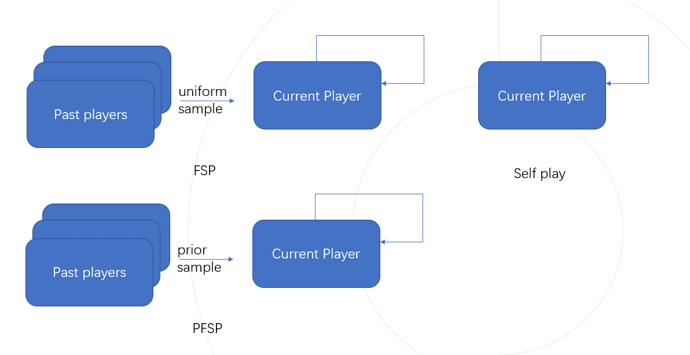

零和博弈¶
问题定义与研究动机¶
零和博弈，又称零和游戏，是博弈论的一个经典概念，意为所有博弈方的利益之和为零的博弈。零和博弈根据参与者的人数分类可分为双人零和博弈和多人零和博弈。 经典的双人零和博弈场景如石头剪刀布，其中一方获胜必然存在另一方失败，意味着当其中的一方收益增加，必然会带来其他方等量的损失。 在双人零和博弈的研究中，学界普遍认为，其研究难点在于如何找到这一问题的解，也就是Nash均衡解（ Nash Equilibrium Solution）。
研究历程¶
随着学者们对于零和博弈方向的研究深入，主要有以下几个发展阶段:
1. 自我博弈( Self-Play, SP)
自我博弈指的是训练中自己和自己对抗，常用于解决棋类游戏和建立一般游戏的基准。像围棋AI AlphaZero 和 Dota2的AI OpenAI Five，则没有利用任何人类数据，只通过自我博弈便达到了超越人类的水平。 虽然Self-Play可以在很多游戏类型中达到超越人类水平的表现，但也有其不足之处。比如在石头剪刀布这一环境中假定人类的策略是只出剪刀，那么 Self-Play 模型会以一个类似剪刀，石头，布的顺序无限循环往复作为策略。
2. 虚拟自我博弈( Fictious Self-Play, FSP) [1]
为了解决上述 Self-Play局限性问题， FSP在训练中引入了训练智能体的过往版本加入训练，在 Self-Play的基础上，还会随机的以相同概率挑选过往版本的智能体对抗，这种训练方式被称为虚拟自我博弈。因为对手池的多样性，不管我们的初始策略是什么， FSP都会收敛到均匀随机出石头剪刀布的混合策略，同时该策略这也是此问题的纳什均衡解。
3. 优先虚拟自我博弈( Prioritised Fictious Self-Play, PFSP) [2]
PFSP( Prioritised Fictious Self-Play)是在 FSP的基础上，依照训练智能体和历史智能体之间的对战胜率分配对手，增加训练智能体对战胜率低的历史智能体的出现频率，从而达到更快的收敛速度，这种训练方式被称为优先虚拟自我博弈。星际争霸2的AI AlphaStar [3] 便采用了 PFSP来辅助训练。
未来展望¶
如何设计更为高效的匹配策略，用更少的训练资源，得到更强的智能体。
在大量工程项目( ALphaStar, TstarBot [4] ) 中都有各自的设计，但往往是经验性的（依靠人类的主观判断），很少有在理论上论证为何高效。
如何考虑多人零和博弈乃至更为一般的多人博弈问题。
参考文献¶
- 1
Heinrich, Johannes, Marc Lanctot, and David Silver. “Fictitious self-play in extensive-form games.” International conference on machine learning. PMLR, 2015.
- 2
Lanctot, Marc, et al. “A unified game-theoretic approach to multiagent reinforcement learning.” Advances in neural information processing systems 30 (2017).
- 3
Vinyals, Oriol, et al. “Grandmaster level in StarCraft II using multi-agent reinforcement learning.” Nature 575.7782 (2019): 350-354.
- 4
Han, Lei, et al. “Tstarbot-x: An open-sourced and comprehensive study for efficient league training in starcraft ii full game.” arXiv preprint arXiv:2011.13729 (2020).
- 5
Muller, Paul, et al. “A generalized training approach for multiagent learning.” arXiv preprint arXiv:1909.12823 (2019).
- 6
Omidshafiei, Shayegan, et al. “α-rank: Multi-agent evaluation by evolution.” Scientific reports 9.1 (2019): 1-29.